EndNote安装与文献导入
EndNote是一款被广泛使用的文献管理软件，是SCI（Thomson Scientific 公司）的官方软件，支持国际期刊的参考文献格式有7000多种，也可以自定义期刊引用格式，便于文献整理、写笔记、做备注、分类、导出期刊格式、进行数据迁移。对于科研需要大量看文献并对文献分类时，EndNote无疑是科研人的好帮手。从本文开始我们的小网站介绍一些EndNote的使用方法，本文先介绍EndNote的安装与文献导入。
EndNote安装
目前比较常见的EndNote版本是EndNote 20。校内正版软件中心提供了EndNote下载和安装方式，这里就不列出了。另外油油也找到了破解版，已经上传到我们的百度网盘“软件”文件夹下。安装时可以点击EN20Inst.exe进行安装：

默认会安装到C:\Program Files (x86)\EndNote 20目录下，在文件管理器打开这个目录，然后使用破解版文件Crack文件夹中的EndNote.exe替换该目录下的同名文件即可完成破解。

然后就可以打开EndNote了。
创建数据库
首次打开EndNote会提示创建数据库，设置数据库名称和保存即可。

当然也可以在主界面左上角选择File->New功能进行创建数据库。
然后就可以开始进行文献导入啦。
从在线网站导入文献
在Web of Science、知网等网站可以直接批量导出文献到EndNote。Web of Science如下，选择EndNote Desktop进行导出，表示导出到EndNote桌面版：
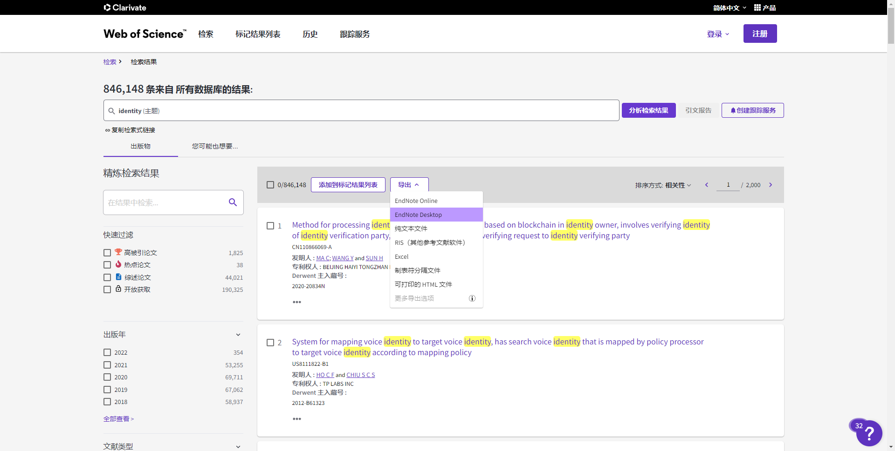
导出时可以进行一些设置，如导出文献的数量、记录内容等等：
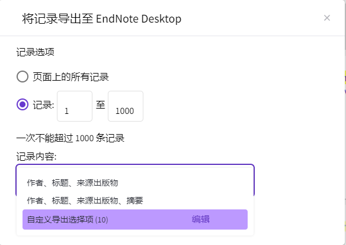
然后可以得到一个.ciw格式的导出文件，用EndNote打开该文件就可以把对应论文导入到EndNote当前的数据库中。不过这样导入的论文是没有PDF文章的，需要点击文献对应的PDF选项，然后Attach PDF才能添加文章：
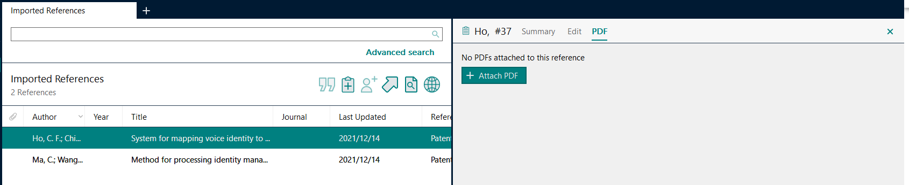
知网用法如下，需要先选择导出哪些文献，然后导出为EndNote格式：

点击导出文献->EndNote之后，需要筛选已选文献，找一下自己想导出的文献：
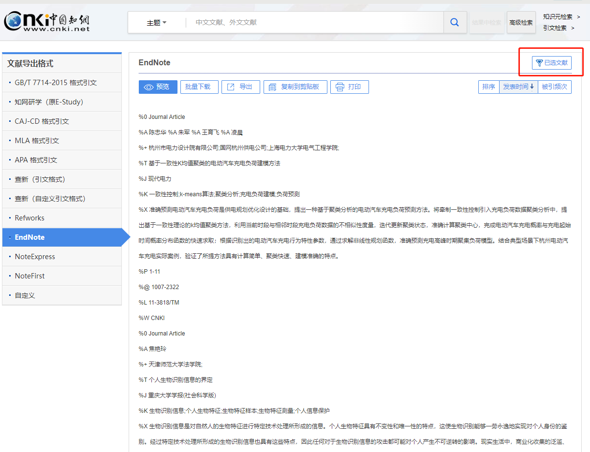
然后点击导出题录：
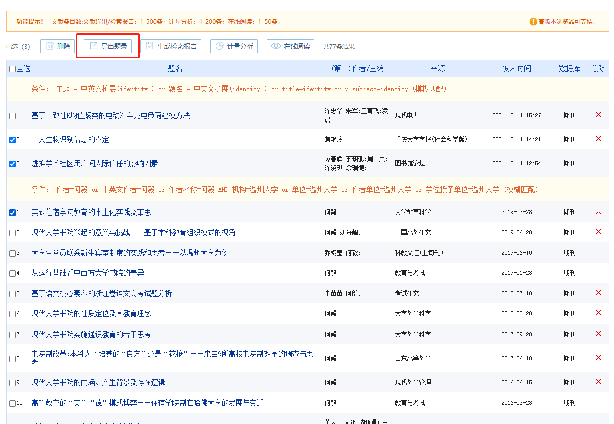
然后选择EndNote、导出：
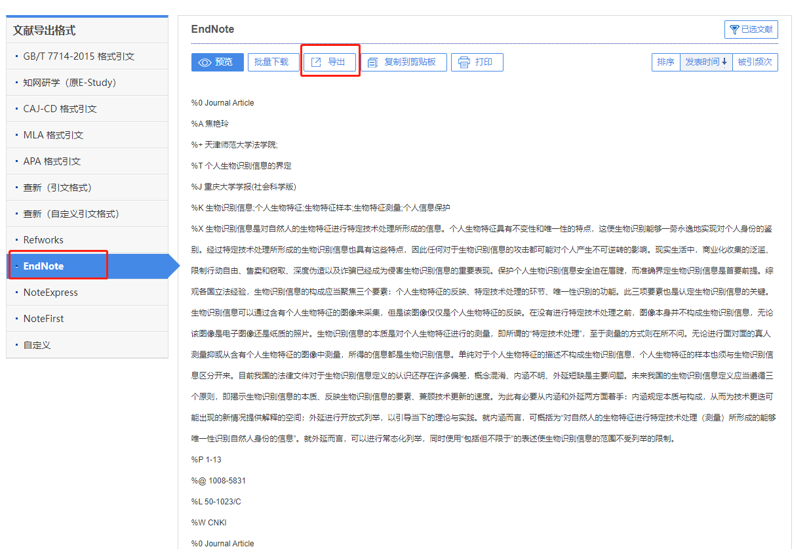
可以得到一个txt文件。可以在EndNote中选择File->Import->File导入该文件：
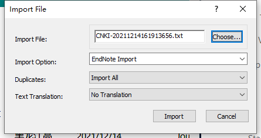
或者将这个文件在记事本或Sublime中打开，另存为.ciw格式：
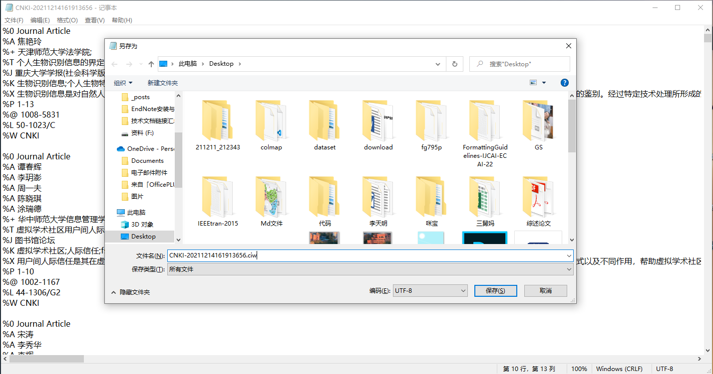
接下来就可以用EndNote打开该文件，把对应论文导入到EndNote当前的数据库中啦。同样地，这样导入的论文是没有PDF文章的，需要点击文献对应的PDF选项，然后Attach PDF才能添加文章。
从本地PDF导入文献
也可以把本地的PDF论文导入到EndNote中。选择File->Import->File，Import Option选择PDF即可：

这样有时候会导致论文信息不准确，可以点击对应论文的Edit编辑一下:
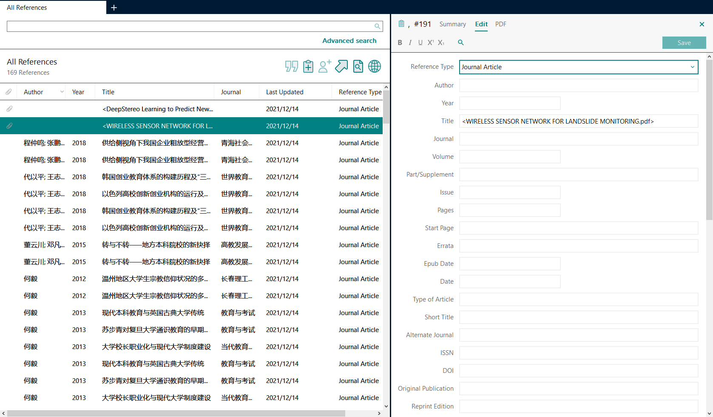
同样也可以选择PDF文件夹上传，选择File->Import->Folder：
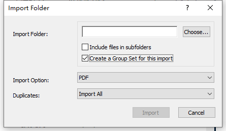
这里还可以选择同时创建Group Set、包含所有子文件夹的文件。
EndNote可以创建不同的Group Set，每个Group Set下又可以创建多个Group，分别用于保存论文。在左边栏的MY GROUPS上右键，即可进行创建Group Set、创建Group等操作。而EndNote中的每篇论文点击右键Add References To，就可以添加到指定Group，实现分组操作。
还可以自动跟踪本地文件夹中的PDF文件。
点击Edit->Preferences->PDF Handling，勾选Enable automatic importing，选择文件夹即可：
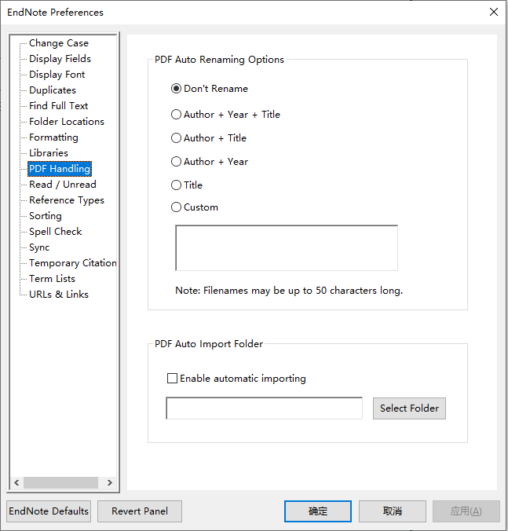
使用EndNote搜索论文并导入
EndNote也可以直接进行论文搜索和导入。点击左边栏的ONLINE SEARCH，选择数据库，就可以进行搜索了。搜索完毕后选择想添加的文件，然后点加号，添加到数据库：
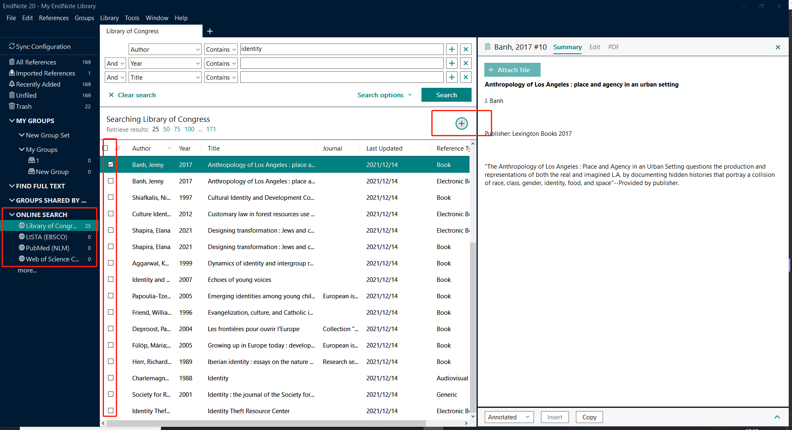
本文的EndNote安装与导入就介绍到这里啦，小仙女加油哟，看好你哟~😄😄